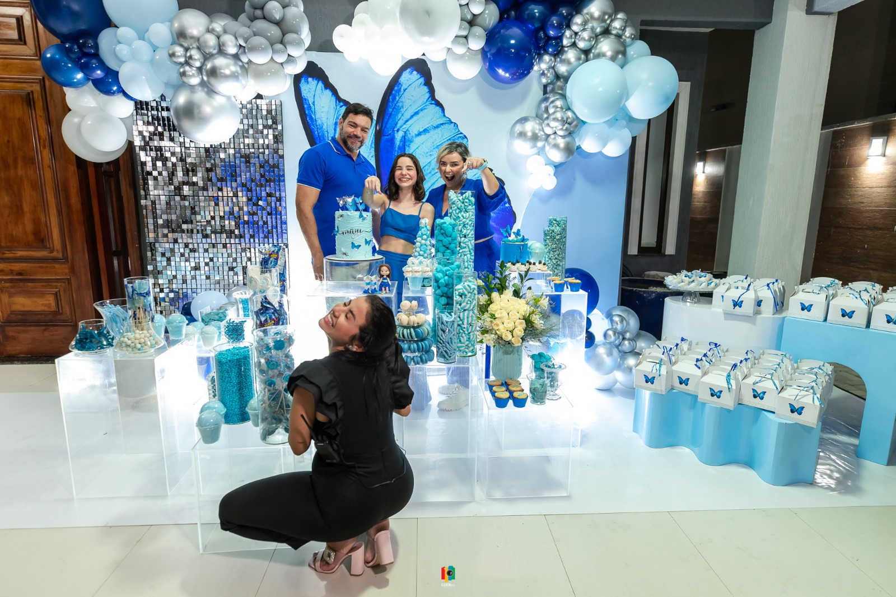
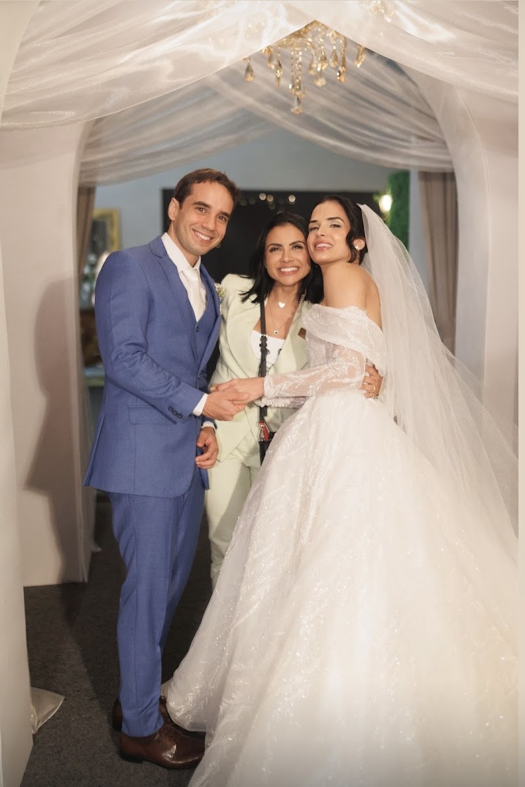
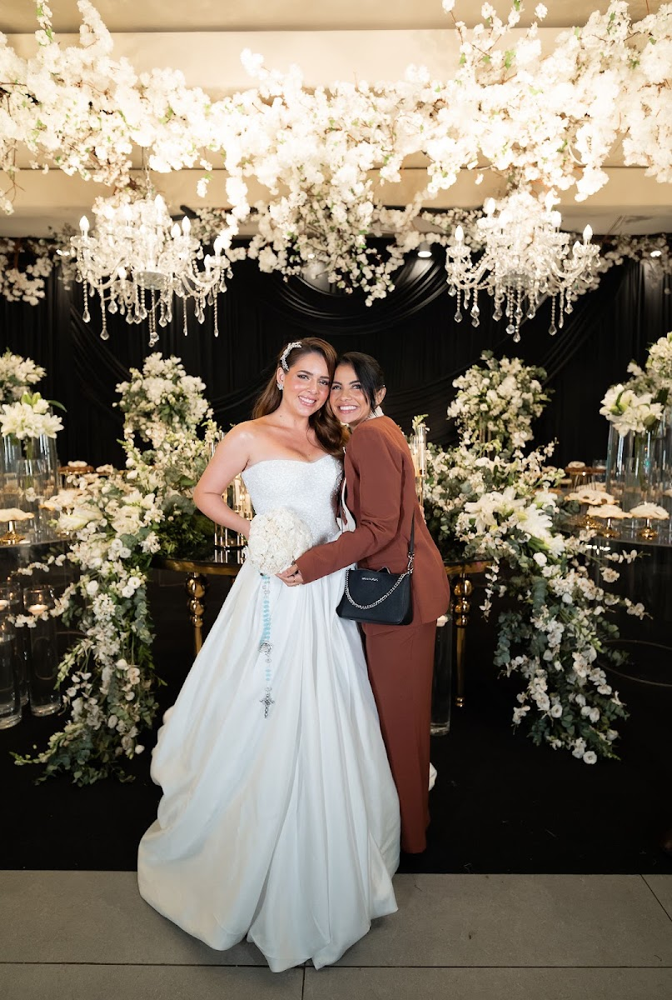

Cerimonial de 15 anos, chás e celebrações de família com Thais Sombra e equipe, do primeiro encontro à última música.

Uma festa com a cara da aniversariante, do tema à última música.
Cerimonial para o grande dia.
Chá revelação e chá de bebê.
Famílias que celebram com a Thais ano após ano.

As avaliações contam a mesma história: a Thais trabalha em cima do sonho de quem está celebrando, prioriza o gosto da aniversariante e topa as ideias mais ousadas. Numa festa de 15 anos, ela chegou a entrar em cena numa peça com o pai da debutante.
Ao lado dela, a assistente Nay, citada pelo nome pelos clientes.
“Já faço festa com Thais há 07 anos, todos os aniversários da minha filha.”
A gente escuta o sonho da aniversariante e da família.
Tema, parceiros e roteiro pensados juntos.
A família descansa e aproveita. A equipe cuida do resto.
Responda 5 perguntas e leve um resumo com cronograma para a conversa com a Thais.
“Profissional em quem você pode entregar um dos momentos mais importantes da sua vida e simplesmente descansar.”
Mãe da Milena · 15 anos“Do começo até as últimas horas o que prevaleceu foi o gosto da Maria Lívia.”
Família · 15 anos“Já faço festa com Thais há 07 anos, todos os aniversários da minha filha.”
Cliente · Google
Endereço: Av. Des. Moreira, 2001 · Aldeota, Fortaleza - CE